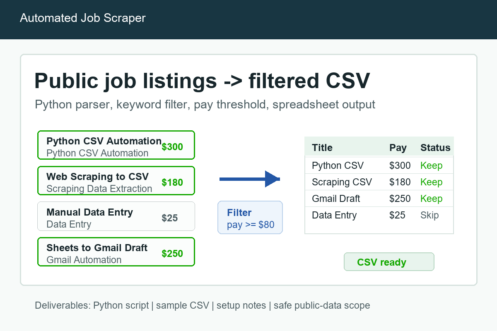

Script Fix
$50-$100
Debug a small Python script, fix a CSV/Excel issue, or make a workflow runnable again.
- Reproduce the issue
- Fix and explain the change
- Short run notes
Small, reviewable first milestones for public data extraction, CSV/Excel cleanup, scraping scripts, and safe Gmail or Google Sheets workflows.
$50-$100
Debug a small Python script, fix a CSV/Excel issue, or make a workflow runnable again.
$100-$150
Extract public website, directory, or listing data into a clean CSV or Excel file.
$150-$300
Build a small workflow such as job scraper, Google Sheets automation, or Gmail draft generator.

A good first milestone proves one source, one output format, and one reviewable sample before expanding the workflow.
To scope a project quickly, send the input source, desired output columns, row/file count, deadline, and whether you need a reusable script or a one-time output.
Fixed prices depend on source complexity, row count, account/API access requirements, and whether a reusable script is needed.